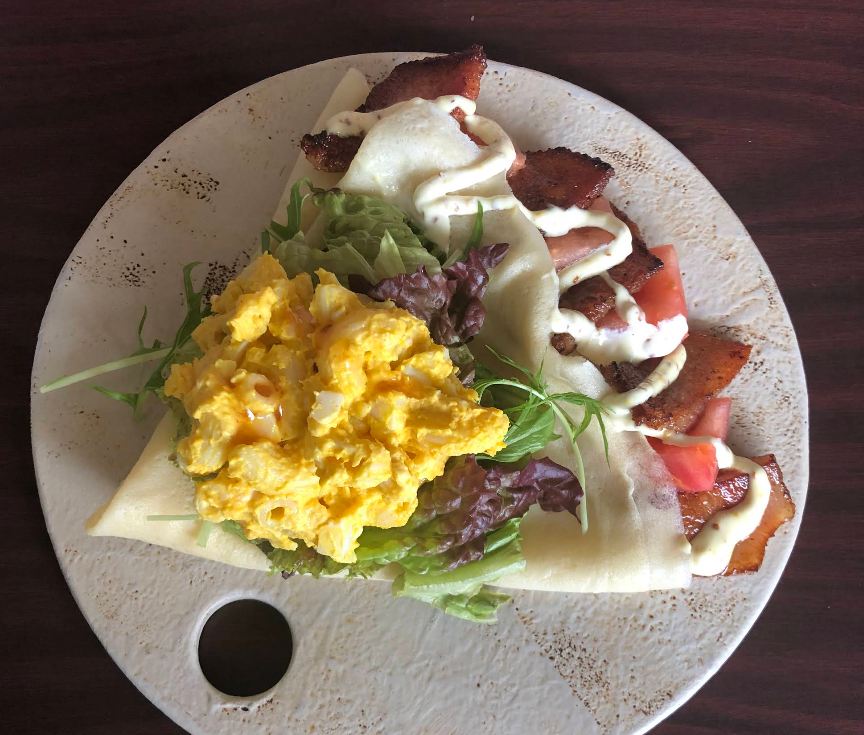
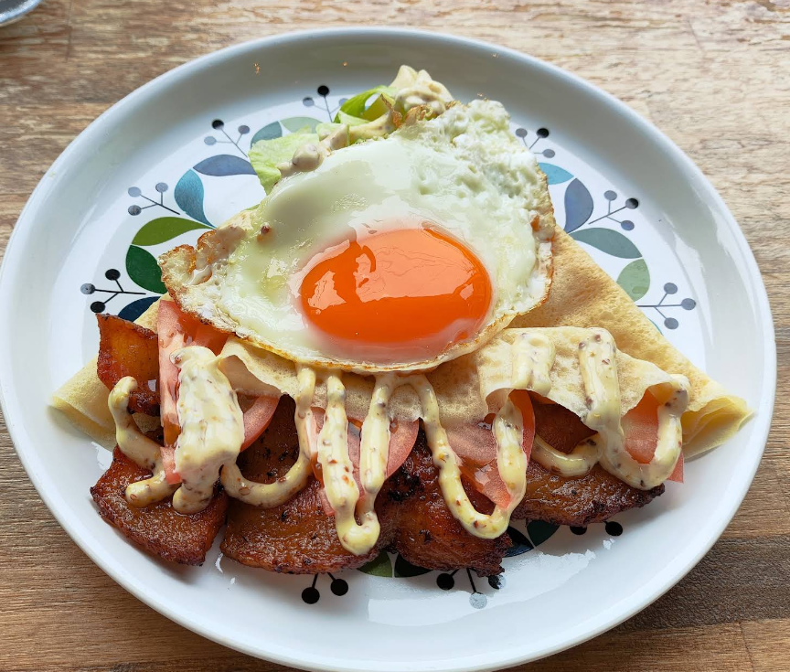
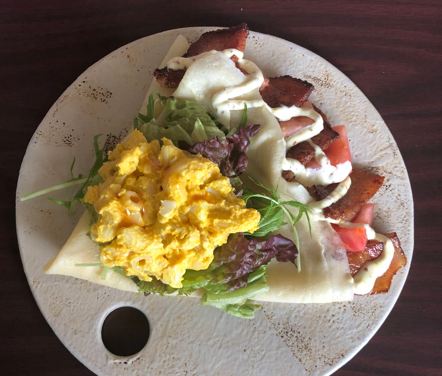
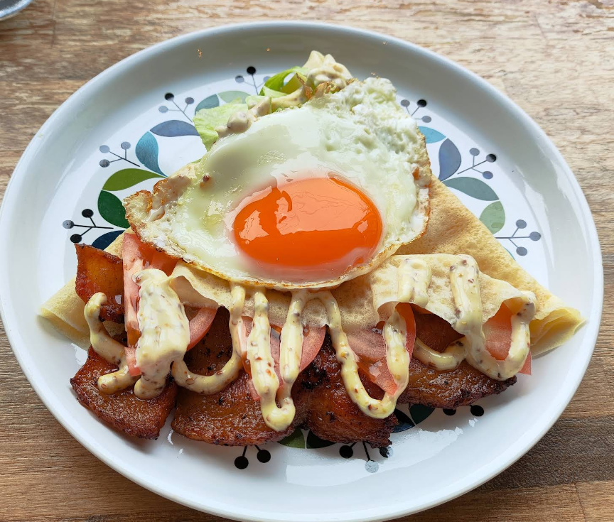

【那覇・国際通り】誰かとシェアしたい！絶品スイーツクレープ「O'CREPE」
 



沖縄県那覇市の国際通り近くにある「スイーツカフェ・オークレープ (sweets cafe O'CREPE)」は
「誰かと手を繋ぎたくなるスイーツ」をコンセプトにした絶品クレープ専門店です。
旬のフルーツを使ったデザート系から、あぐーベーコンを使ったお食事系のクレープまで幅広く楽しめます。
外せない！お店の推しメニューと魅力
① 旬のフルーツととろけるカスタード
オークレープの定番は、季節ごとに変わる**旬のフルーツ**を贅沢に使ったクレープです。
濃厚なカスタードやキャラメルソースとの相性は抜群！😋
特に「旬のフルーツのキャラメルカスタード」は、リピーターが絶賛する外せない一品です。
② 甘いだけじゃない！人気のお食事系クレープ
甘いデザートクレープだけでなく
「あぐーベーコンとかぼちゃサラダのクレープ」といった沖縄ならではのお食事系クレープも人気があります✨
デザート・食事どちらにも対応できる、豊富なバリエーションが魅力です。
店舗情報
- 店名
- sweets cafe O'CREPE (スイーツカフェ・オークレープ)
- 住所
- 沖縄県那覇市松尾２－６－１２ 大川ビル２階
- 営業時間
- 11:00〜17:00 (L.O. 16:30)
- 定休日
- 火曜日、水曜日
- ウェブサイト
- https://crepeokinawa.wixsite.com/website